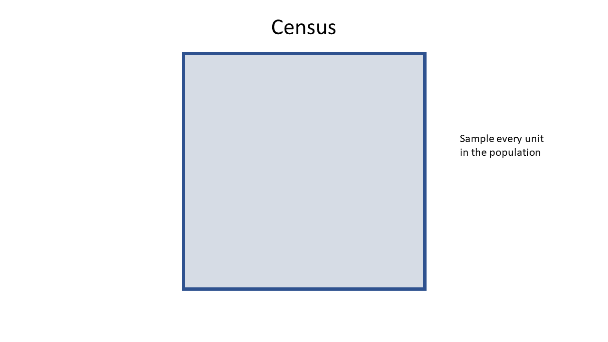
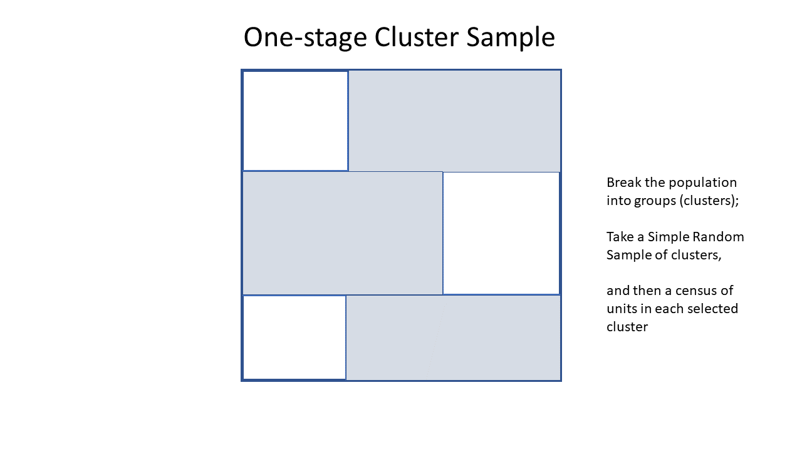

5 Sample Designs
In this Chapter we will consider the various sample designs in common use, the reasons for using each one, and methods for selecting from suitable frames.
We’ll use a variety of datasets.
5.1 Census
The simplest of all! We select every unit in the population, so \(n=N\).
The probability of selection is \[ \pi = \frac{n}{N} = \frac{N}{N} = 1 \] i.e. every unit is selected with certainty, and the sample weights are all \[ w_i = \frac{1}{\pi_i} = \frac{1}{1} = 1 \] so each unit in the sample represents itself alone.

Figure 5.1: Census
5.2 Simple Random Sampling Without Replacement (SRSWOR)
The Simple Random Sample WithOut Replacement is the most fundamental of all sample designs, and it appears nested inside many more complex designs as we’ll see later.
We have a population of size \(N\) which is fully enumerated (i.e. fully listed), and we want to select a sample of size \(n\).
The defining property of a SRSWOR is that all samples of size \(n\) have an equal chance of selection. A consequence of this definition is that all population units have the same chance of selection.
There are
\[
\binom{N}{n} = {}^NC_n = \frac{N!}{n!(N-n)!}
\]
possible samples. The R function choose(n,k) can be used for evaluating the number
of possible samples. e.g. the number of ways to select \(n=20\) units from \(N=87\) is
## [1] 2.375456e+19The probability of selection of each unit is \[ \pi_i = \frac{n}{N} \] leading to sample weights \[ w_i = \frac{N}{n} \] The SRSWOR is used when the costs of different samples are not known to differ (e.g. there are no units that are more costly to visit than others), and where there is no informative auxiliary information.
If we have a sample frame stored as an R data frame sframe with a column ĪD uniquely
identifying the units, then we can select an SRSWOR as follows:
or
bigN <- nrow(sframe)
IDset <- sample(sframe$ID,n)
samp <- sframe[sframe$ID %in% IDset,]
samp$weight <- bigN/nor as a function
select.srswor <- function(df, n) {
# SRSWOR
bigN <- nrow(df)
if(n<=bigN) {
samp <- df[sample(bigN,n,replace=FALSE),]
samp$bigN <- bigN
samp$weight <- bigN/n
} else {
stop("Cannot have a SRSWOR with n>N")
}
return(samp)
} 
Figure 5.2: Simple Random Sample WithOut Replacement (SRSWOR)
Example
Select \(n=5\) units from a frame listing of airports with IATA codes sourced from Kaggle https://www.kaggle.com/datasets/syedasimalishah/airports/data
The top ten rows of the dataset of \(N=6072\) are shown here:| ID | IATA | Name | City | Country | Latitude | Longitude |
|---|---|---|---|---|---|---|
| 1 | AAA | Anaa Airport | Anaa | French Polynesia | -17.352600 | -145.509995 |
| 2 | AAC | El Arish International Airport | El Arish | Egypt | 31.073299 | 33.835800 |
| 3 | AAE | Rabah Bitat Airport | Annaba | Algeria | 36.822201 | 7.809174 |
| 4 | AAF | Apalachicola Regional Airport | Apalachicola | United States | 29.727501 | -85.027496 |
| 5 | AAH | Aachen-Merzbrück Airport | Aachen | Germany | 50.823055 | 6.186389 |
| 6 | AAK | Buariki Airport | Buariki | Kiribati | 0.185278 | 173.636993 |
| 7 | AAL | Aalborg Airport | Aalborg | Denmark | 57.092759 | 9.849243 |
| 8 | AAM | Malamala Airport | Malamala | South Africa | -24.818100 | 31.544600 |
| 9 | AAN | Al Ain International Airport | Al Ain | United Arab Emirates | 24.261700 | 55.609200 |
| 10 | AAO | Anaco Airport | Anaco | Venezuela | 9.430225 | -64.470726 |
And here is a SRSWOR of \(n=5\) airports
| ID | IATA | Name | City | Country | Latitude | Longitude | bigN | weight |
|---|---|---|---|---|---|---|---|---|
| 3593 | NTD | Point Mugu Naval Air Station (Naval Base Ventura Co) | Point Mugu | United States | 34.12030 | -119.121002 | 6072 | 1214.4 |
| 1472 | EUM | Neumünster Airport | Neumuenster | Germany | 54.07944 | 9.941389 | 6072 | 1214.4 |
| 2512 | KHZ | Kauehi Airport | Kauehi | French Polynesia | -15.78080 | -145.123993 | 6072 | 1214.4 |
| 197 | ANC | Ted Stevens Anchorage International Airport | Anchorage | United States | 61.17440 | -149.996002 | 6072 | 1214.4 |
| 4710 | SRN | Strahan Airport | Strahan | Australia | -42.15500 | 145.292007 | 6072 | 1214.4 |
5.3 Simple Random Sampling With Replacement (SRSWR)
This design is rarely used, but is the simplest form of Probability Proportional to Size With Replacement (PPSWR) sampling, but with the sizes all equal.
Sampling proceeds in principle by selecting one unit at a time where each unit has a \(1/N\) chance of being selected each time. After \(n\) draws the probability a unit has been selected at least once is \[ p_i = 1 - \left(1-\frac{1}{N}\right)^n \] (This is 1 minus the chance that a unit is not selected on any of the \(n\) sampling occasions.)
If \(n\) is tiny compared to \(N\), \(p_i\) is approximately \(n/N\) which is the SRSWOR selection
probability. In practice we assign a weight of \(N/n\) to each unit as it is selected, so if unit
\(i\) is selected \(m_i\) times then it ends up with a weight of
\[
w_i = m_\frac{N}{n}
\]
If we use the approximate weights calculated in this way we have what is known as the
Hansen-Hurwitz estimator, rather than the Horwitz-Thompson estimator. However we think of
the weights in the same way and this distinction need not concern us.
Example
Here is a SRSWR of \(n=5\) airports: note that we have aggregated across any instances of multiple selections, so that in the output sample list each unit appears only once no matter how often it was selected.
bigN <- nrow(airports)
n <- 5
samp <- airports[sample(bigN,n,replace=TRUE),]
samp$weight <- bigN/n
samp <- samp |>
group_by(ID) |>
summarise(across(-weight, first), nsampled=n(), weight=sum(weight))or as a function
select.srswr <- function(df, n) {
# SRSWR
bigN <- nrow(df)
df$rownames <- 1:bigN
samp <- df[sample(bigN,n,replace=TRUE),]
samp$bigN <- bigN
samp$weight <- bigN/n
samp <- samp |>
group_by(rownames) |>
summarise(across(-weight, first), nsampled=n(), weight=sum(weight)) |>
as.data.frame() |>
ungroup() |>
select(-rownames)
return(samp)
}
samp <- airports |> select.srswr(n=5)| ID | IATA | Name | City | Country | Latitude | Longitude | nsampled | weight |
|---|---|---|---|---|---|---|---|---|
| 805 | CCB | Cable Airport | Upland | United States | 34.11160 | -117.6880 | 1 | 1214.4 |
| 1063 | CUD | Caloundra Airport | Caloundra | Australia | -26.80000 | 153.1000 | 1 | 1214.4 |
| 1077 | CVE | Coveñas Airport | Coveñas | Colombia | 9.40092 | -75.6913 | 1 | 1214.4 |
| 2738 | LAY | Ladysmith Airport | Ladysmith | South Africa | -28.58170 | 29.7497 | 1 | 1214.4 |
| 4804 | SXN | Sua Pan Airport | Sowa | Botswana | -20.55340 | 26.1158 | 1 | 1214.4 |
5.4 Probability proportion to size Sampling (PPSWR)
This sample design generalises the SRSWR design to unequal probabilities of selection. This design recognises that some units may have more influence on our estimates because of some size property that is known (it must be on the frame). We therefore give these units higher probabilities of being selected, and therefore lower weight.
We draw \(n\) units, one at a time, but with probabilities which are proportional to the size measure \(X_i\): thus the probability of selection of unit \(i\) on each of the \(n\) draws from the population is \[ p_i = \frac{X_i}{\sum_{j=1}^N X_j} \] Approximating the probability of selection \(\pi\) after \(n\) draws as \(np_i\) leads to the sample weights \[ w_i = \frac{1}{np_i} \] In a PPSWR sample these weights are not guaranteed to add up to the population size.
Design considerations
We need to decide on:
- the size variable \(X_i\) (which must be known for every unit in the population), and
- the sample size \(n\).
The size variable \(X_i\) should correlate in some way with the population characteristics we want to estimate. If we’re interested in estimating the total economic output of businesses, then the amount of tax each business paid last year would be a good size variable. But it wouldn’t be helpful if we were interested in estimating the proportion of businesses with family friendly employment practices.
With replacement designs lose some efficiency because their estimators do not incorporate a finite population correction in their standard errors. For small sampling fractions (i.e. small \(n/N\)) this is not a significant drawback.
Example
We have a list of \(N=236\) countries and their 2023 populations: the first 10 are listed below| Country | Code | Year | Population | Prob |
|---|---|---|---|---|
| Afghanistan | AFG | 2023 | 41454762 | 0.0051249 |
| Albania | ALB | 2023 | 2811660 | 0.0003476 |
| Algeria | DZA | 2023 | 46164222 | 0.0057071 |
| American Samoa | ASM | 2023 | 47544 | 0.0000059 |
| Andorra | AND | 2023 | 80869 | 0.0000100 |
| Angola | AGO | 2023 | 36749909 | 0.0045432 |
| Anguilla | AIA | 2023 | 14435 | 0.0000018 |
| Antigua and Barbuda | ATG | 2023 | 93331 | 0.0000115 |
| Argentina | ARG | 2023 | 45538402 | 0.0056297 |
| Armenia | ARM | 2023 | 2943398 | 0.0003639 |
Select a PPSWR sample of \(n=10\) countries, with probability proportional to their population sizes.
set.seed(111)
bigN <- nrow(pop)
n <- 10
samp <- pop[sample(bigN,n,prob=pop$Prob,replace=TRUE),]
samp$weight <- 1/(n*samp$Prob)
samp <- samp |>
group_by(Country) |>
summarise(across(-weight, first), nsampled=n(), weight=sum(weight))or as a function
select.ppswr <- function(df, n, sizevar) {
# PPSWR
bigN <- nrow(df)
df$rownames <- 1:bigN
samp <- df[sample(bigN,n,prob=df[,sizevar],replace=TRUE),]
samp$bigN <- bigN
samp$weight <- bigN/n
samp <- samp |>
group_by(rownames) |>
summarise(across(-weight, first), nsampled=n(), weight=sum(weight)) |>
as.data.frame() |>
ungroup() |>
select(-rownames)
return(samp)
}| Country | Code | Year | Population | Prob | bigN | nsampled | weight |
|---|---|---|---|---|---|---|---|
| Bangladesh | BGD | 2023 | 171466986 | 0.0211977 | 236 | 1 | 23.6 |
| Brazil | BRA | 2023 | 211140731 | 0.0261023 | 236 | 1 | 23.6 |
| India | IND | 2023 | 1438069597 | 0.1777819 | 236 | 2 | 47.2 |
| Indonesia | IDN | 2023 | 281190068 | 0.0347622 | 236 | 1 | 23.6 |
| Japan | JPN | 2023 | 124370947 | 0.0153754 | 236 | 1 | 23.6 |
| Pakistan | PAK | 2023 | 247504505 | 0.0305978 | 236 | 1 | 23.6 |
| South Africa | ZAF | 2023 | 63212386 | 0.0078147 | 236 | 1 | 23.6 |
| United States | USA | 2023 | 343477330 | 0.0424625 | 236 | 2 | 47.2 |
5.5 Linear Systematic Random Sample (LSRS)
This design is often used in cases where the population is not fully enumerated, but is presented to us in the form of a queue. For example we might want to select one in ten passengers cars checking in for a ferry crossing. Another example is where there is information in the ordering of a list: for example a list might be sorted from youngest to oldest, or sorted from north to south. We can space out our sample down the list, avoiding the chance that our sample doesn’t have a good spread of ages, or a good spread of latitudes.
We select \(n\) units from \(N\) by first calculating the skip \(k\), which is the nearest integer at or below \(N/n\). We then choose at random one unit from the first \(k\) of our list or queue, say that is unit number \(j\). We then select units \(j\), \(j+k\), \(j+2k\), \(j+3k\), etc.
Selecting one unit at random in the first \(k\) (rather than just selecting the first unit, as we might naively think of doing) means that every unit in the list has a chance of selection.
The selection probabilities are \[ \pi_i = \frac{n}{N} \] and weights are \[ w_i = \frac{N}{n} \] Data from this design are often analysed as if they were drawn as a SRSWOR, but in fact this is a special case of a one-stage cluster sample (S1C, see below).

Figure 5.3: Linear Systematic Random Sample (LSRS)
Note that if there are \(N\) units but \(N\) is not an exact multiple of the skip \(k\), then the sample size will differ depending on which of the first \(k\) units we select to initiate sampling. For example if we wanted to select \(n=3\) units by LSRS from a list of \(N=11\) units, then the skip size is \(k=\text{floor}(11/3)=\text{floor}(3.67)=3\). If we start the process by selecting the first unit, we’d end up with the sample of 4 units, \(\{1,4,7,10\}\), but if we start by selecting the 4th unit we’d end up with only 3 units, \(\{4,7,10\}\).
Another common reason to take an LSRS is in household surveys: we’re selecting dwellings from a small area, and for reasons of confidentiality (we don’t want members of different selected households to be aware that they are both in the same survey), or to prevent collusion between neighbouring selected households, we space the sample out along the street using a LSRS to separate the selected dwellings as much as possible.
An LSRS is also a convenient way to sample if you have a printed list. After choosing the random start location among the first \(k\) units you can skip down the list at fixed intervals - something that is conventient and simple to do on a printed list.
Design considerations
- Choose a sample size \(n\)
- Consider the ordering of the list and whether units differ systematically through the list
An LSRS has one risk, and that is a periodicity in the frame that you are unaware of. For example if we are selecting apartments from a building to inspect for structural weaknesses, and select every fourth one (after a random start), we had better be sure that there aren’t exactly four apartments per floor: otherwise we’ll have inadvertently selected a column of apartments stacked one above the other, e.g. all in the north-east corner. We’ll miss any systematic issues that occur with the north-west apartments in that case.
Such unknown periodicities are unlikely in most cases, but we should be aware that they can occur.
More importantly if the list is ordered in some way, e.g. by size of location, then a LSRS guarantees a spread across the variable that defines the ordering. This can be highly desirable since we are sure to be sampling across the full diversity of the ordering variable. A good example is sampling passengers seated in an aircraft - if we take an LSRS using a list of passengers ordered by row and seat number we’ll be guaranteed to get a spread of business class, premium economy and economy class passengers in our sample.
Example
To select a LSRS of airports, let’s order the airports by latitude, and then take a LSRS of \(n=5\) units.
bigN <- nrow(airports)
airports <- airports[order(airports$Latitude),]
n <- 5
k <- floor(bigN/n)
cat("Skip size is k =",k,"\n")## Skip size is k = 1214## Starting sampling at unit 305## Actual sample size is 5select.lsrs <- function(df, n) {
# LSRS
bigN <- nrow(df)
k <- floor(bigN/n)
i0 <- sample(k,1) # first selected unit
n <- (bigN-i0)%/%k + 1 # recalculate the sample size
samp <- df[i0 + (0:(n-1))*k,]
samp$bigN <- bigN
samp$weight <- bigN/n
return(samp)
}
samp <- airports |> select.lsrs(5)| ID | IATA | Name | City | Country | Latitude | Longitude | weight |
|---|---|---|---|---|---|---|---|
| 5304 | VAO | Suavanao Airport | Suavanao | Solomon Islands | -7.58556 | 158.73100 | 1214.4 |
| 4746 | STV | Surat Airport | Surat | India | 21.11410 | 72.74180 | 1214.4 |
| 1714 | GIB | Gibraltar Airport | Gibraltar | Gibraltar | 36.15120 | -5.34966 | 1214.4 |
| 1638 | FYN | Fuyun Koktokay Airport | Fuyun | China | 46.80417 | 89.51201 | 1214.4 |
| 5277 | UTO | Indian Mountain LRRS Airport | Indian Mountains | United States | 65.99280 | -153.70399 | 1214.4 |
5.6 Stratified Simple Random Sample (STSRS)
In this design we take our population of \(N\) units and break it into \(H\) subgroups using our auxiliary data from the frame. We then draw separate samples from each of the subgroups.
To draw a stratified sample each population unit needs to be assigned in advance to one, and only one, of these subgroups - which are known as strata (singular: stratum).
There are \(N_h\) units in stratum \(h\), and all of these stratum-level population sizes add to the total population size: \[ N = \sum_{h=1}^H N_h \] Dividing both sides of this equation by \(N\) we have the stratum fractions \(F_h=N_h/N\): these are the proportions of the population that belong to the various strata, and they add up to 1: \[ 1 = \sum_{h=1}^H \frac{N_h}{N} = \sum_{h=1}^H F_h \]
For example, we can assign all residential addresses in New Zealand to exactly one of a defined set of non-overlapping regions, such as regional council areas. Or we might just have two strata: North Island, South Island (neglecting any addresses on offshore islands). There are \(N=2.4\) million addresses in New Zealand, of which \(N_1=1.72\) million in the North Island (\(F_1=0.74=74%\)) and \(N_2=0.62\) million are in the South Island (\(F_2=0.26=26%\)).
We then divide or allocate our total sample size \(n\) to the strata. Stratum \(h\) is allocated \(n_h\) units, and the total sample size is then the sum of these: \[ n = \sum_{h=1}^H n_h \] We then carry out independent sampling in each of the strata.
The way we choose to define the strata and the way we then choose to allocate the sample across the strata depend on our goals.
Stratified sampling is done for a number of reasons
Estimation Efficiency - efficiency is the word statisticians use when considering how we can get standard errors which are as small as possible.
In business surveys we often stratify because businesses differ from each other dramatically, particularly in size measures such as turnover or size of workforce. That means a small number of businesses (e.g. Spark, Air New Zealand, Fonterra) have a very large effect on estimates, and they differ dramatically from each other as well. If they happen to be included or happen to be missed from our samples that means we’d get estimates which differ very much between samples. To protect ourselves against this we stratify by business size (using tax data). The largest businesses are in the top stratum, which is small, but a census is always done of those businesses (the top stratum is called a full coverage stratum). The smallest businesses are in the lowest stratum, and they are selected with low probability: since they resemble each other more, and one can stand in for another.
Having a strata designed so that the units within the strata resemble each other strongly (one can stand in for another easily), but where units in different strata differ strongly from each other. For the same sample size as a SRSWOR stratified designs can sometimes achieve much much smaller standard errors.
Subgroup estimates - we may stratify by region because we want to make estimates for each region separately. In that case we need to ensure that our sample is large enough in each stratum to get reliable estimates. A national SRSWOR runs the risk that one region might happen to miss out on getting much sample.
Operational considerations - we may stratify by region because that is the easiest way to manage an interview workforce - we may have interviewers based in a number of regional cities, and having them interview in their local areas is the best way to organise that workforce.

Figure 5.4: Stratified Simple Random Sample (STSRS)
Two common methods for allocating the \(n\) sample units across the \(H\) strata are:
Equal allocation \[ n_h = \frac{n}{H} \] Every stratum gets the same number of units allocated - independent of the stratum size. That means we get different weights in each stratum: \[ w_h = \frac{N_h}{n_h} = H\frac{N_h}{n} \] This is sensible when we want to have high precision estimates in each stratum separately.
Proportional allocation \[ n_h = nF_h = n\frac{N_h}{N} \] Here large strata get a lot of units allocated to them, and small strata get fewer units. The consequence of this design is that the weights of all units are equal, no matter which stratum they come from: \[ w_h = \frac{N_h}{n_h} = \frac{N}{n} \] This allocation is also called self weighting, and the weights are the same as in SRSWOR. (Though note: even though the weights are the same, the standard errors of estimates can differ very significantly from those from a SRSWOR.)
Design considerations
- Choose the stratification variable(s) \(X_i\), decide the number of strata \(H\), define the strata using the stratification variable(s), determine the stratum sizes \(N_h\), and stratum fractions \(F_h=N_h/N\).
- Choose the overall sample size \(n\) and allocate it across the strata.
Example
The 2026 directory of NZ schools available from https://www.educationcounts.govt.nz/directories/list-of-nz-schools lists 2504 schools of various types. Each School is associated with one of \(H=12\) Education Regions, with counts \(N_h\) and stratum fractions \(F_h\) listed below.
| \(h\) | Education Region | \(N_h\) | \(F_h\) |
|---|---|---|---|
| 1 | Bay of Plenty, Waiariki | 185 | 0.0739 |
| 2 | Canterbury, Chatham Islands | 283 | 0.1130 |
| 3 | Hawke’s Bay, Tairāwhiti | 174 | 0.0695 |
| 4 | Nelson, Marlborough, West Coast | 127 | 0.0507 |
| 5 | Otago, Southland | 228 | 0.0911 |
| 6 | Tai Tokerau | 151 | 0.0603 |
| 7 | Taranaki, Whanganui, Manawatū | 234 | 0.0935 |
| 8 | Tāmaki Herenga Manawa | 188 | 0.0751 |
| 9 | Tāmaki Herenga Tāngata | 197 | 0.0787 |
| 10 | Tāmaki Herenga Waka | 179 | 0.0715 |
| 11 | Waikato | 277 | 0.1106 |
| 12 | Wellington | 281 | 0.1122 |
We can select a stratified sample using the following function which implements an independent simple random sample within each stratum with either equal or proportional allocation.
It implements PPSWR sampling within strata as well.
select.stsrs <- function(df, n, stratumvar,
allocation="equal",
method="SRSWOR", sizevar=NULL) {
bigN <- nrow(df)
if(!stratumvar%in%names(df)) {
stop("Stratum variable is not present in the data frame")
}
stratumproperties <- as.data.frame(table(df[,stratumvar]))
names(stratumproperties) <- c(stratumvar,"Nh")
if(allocation=="equal") {
stratumproperties$nh <- round(n/nrow(stratumproperties))
} else if(allocation=="proportional") {
stratumproperties$nh <- round(n*stratumproperties$Nh/sum(stratumproperties$Nh))
} else {
stop("Invalid allocation")
}
df <- merge(df,stratumproperties,by=stratumvar)
if(method=="SRSWOR") {
samp <- do.call(rbind, by(df, df[,stratumvar],
function(dfx) select.srswor(dfx,first(dfx$nh))))
} else if(method=="PPSWR") {
samp <- do.call(rbind, by(df, df[,stratumvar],
function(dfx) select.ppswr(dfx,first(dfx$nh),sizevar=sizevar)))
} else {
stop("Sampling method invalid")
}
return(samp)
}SRSWOR with Equal allocation
| Education Region, \(h\) | \(N_h\) | \(n_h\) | Weight, \(w_h\) | Selected Schools |
|---|---|---|---|---|
| Bay of Plenty, Waiariki | 10 | 185 | 18.5 | 143;463;719;1170;1762;1811;1820;1821;2057;6940 |
| Canterbury, Chatham Islands | 10 | 283 | 28.3 | 357;418;1611;3288;3304;3348;3479;3505;3535;3586 |
| Hawke’s Bay, Tairāwhiti | 10 | 174 | 17.4 | 208;218;2560;2575;2593;2599;2654;2687;2691;2705 |
| Nelson, Marlborough, West Coast | 10 | 127 | 12.7 | 293;295;303;3062;3071;3180;3233;3343;3690;6975 |
| Otago, Southland | 10 | 228 | 22.8 | 377;400;3737;3753;3824;3827;3943;3982;4017;4050 |
| Tai Tokerau | 10 | 151 | 15.1 | 1011;1013;1019;1038;1047;1058;1059;1094;1129;4552 |
| Taranaki, Whanganui, Manawatū | 10 | 234 | 23.4 | 2152;2165;2167;2178;2232;2341;2365;2416;2440;4123 |
| Tāmaki Herenga Manawa | 10 | 188 | 18.8 | 48;530;618;1319;1334;1381;1436;1510;1522;1563 |
| Tāmaki Herenga Tāngata | 10 | 197 | 19.7 | 32;42;1266;1326;1407;1505;1555;1567;1577;6788 |
| Tāmaki Herenga Waka | 10 | 179 | 17.9 | 91;95;553;594;1201;1203;1259;1427;1491;1580 |
| Waikato | 10 | 277 | 27.7 | 1682;1706;1835;1941;2008;2033;2074;2090;2215;6941 |
| Wellington | 10 | 281 | 28.1 | 246;546;2742;2846;2874;2963;2967;3013;3032;3045 |
SRSWOR with proportional allocation
samp <- schools |> select.stsrs(n=120,
stratumvar="Education_Region",
allocation="proportional", sizevar="Total")| Education Region, \(h\) | \(N_h\) | \(n_h\) | Weight, \(w_h\) | Selected Schools |
|---|---|---|---|---|
| Bay of Plenty, Waiariki | 9 | 185 | 20.55556 | 148;545;558;1698;1711;1788;1852;1933;2068 |
| Canterbury, Chatham Islands | 14 | 283 | 20.21429 | 531;738;3275;3301;3336;3381;3384;3412;3418;3549;3554;3580;3581;4135 |
| Hawke’s Bay, Tairāwhiti | 8 | 174 | 21.75000 | 210;1669;2547;2574;2651;2702;2723;2725 |
| Nelson, Marlborough, West Coast | 6 | 127 | 21.16667 | 300;301;2811;3181;3207;3231 |
| Otago, Southland | 11 | 228 | 20.72727 | 386;387;391;3716;3731;3772;3812;3826;3830;3836;3957 |
| Tai Tokerau | 7 | 151 | 21.57143 | 1024;1028;1084;1096;1111;1138;1667 |
| Taranaki, Whanganui, Manawatū | 11 | 234 | 21.27273 | 2157;2160;2175;2265;2336;2357;2389;2412;2442;2475;2481 |
| Tāmaki Herenga Manawa | 9 | 188 | 20.88889 | 57;61;1210;1362;1368;1480;1606;4228;6939 |
| Tāmaki Herenga Tāngata | 9 | 197 | 21.88889 | 37;39;1221;1296;1331;1557;1592;4146;6937 |
| Tāmaki Herenga Waka | 9 | 179 | 19.88889 | 91;97;103;466;1271;1329;1355;1418;6944 |
| Waikato | 13 | 277 | 21.30769 | 146;159;160;671;1358;1891;1912;1946;1963;2013;2071;2094;6976 |
| Wellington | 13 | 281 | 21.61538 | 244;1651;2669;2818;2847;2859;2876;2911;2916;2991;3015;3022;3035 |
PPSWR with Equal Allocation
samp <- schools |> select.stsrs(n=120,
stratumvar="Education_Region",
allocation="equal",
method="PPSWR", sizevar="Total")| Education Region, \(h\) | \(N_h\) | \(n_h\) | Selected Schools |
|---|---|---|---|
| Bay of Plenty, Waiariki | 9 | 185 | 120;121;143;152;532;1699*;1730;1761;1766 |
| Canterbury, Chatham Islands | 10 | 283 | 311;321;325;333;337;686;2113;3372;3521;4212 |
| Hawke’s Bay, Tairāwhiti | 10 | 174 | 216;217;227;230;2445;2564;2581;2628;2677;2688 |
| Nelson, Marlborough, West Coast | 8 | 127 | 289;296*;1148;1587;3189;3206;3208;3229 |
| Otago, Southland | 10 | 228 | 374;377;405;533;552;586;747;3864;3967;4054 |
| Tai Tokerau | 9 | 151 | 5;8;9;13*;15;21;1032;1050;1648 |
| Taranaki, Whanganui, Manawatū | 9 | 234 | 189;203*;204;422;2164;2205;2216;2244;2397 |
| Tāmaki Herenga Manawa | 10 | 188 | 65;1190;1319;1370;1383;1402;1462;2085;3630;6760 |
| Tāmaki Herenga Tāngata | 9 | 197 | 47;725;767;1223;1320;1341;1396*;1406;1572 |
| Tāmaki Herenga Waka | 10 | 179 | 90;91;631;949;1203;1393;1423;1435;1460;1547 |
| Waikato | 10 | 277 | 131;158;615;1695;1700;1783;1877;2007;2021;3612 |
| Wellington | 10 | 281 | 241;248;253;260;272;498;614;2918;2994;3036 |
(Schools selected multiple times are indicated with a *)
5.7 One stage cluster sampling (S1C)
One stage cluster sampling superficially resembles stratified sampling. As in stratified sampling we divide the population into groups, in this case called clusters, assign each member of the population to one and only one group. However rather than sample members from each cluster, we instead draw a sample of clusters (by SRSWOR, or sometimes by PPSWR). We then take a census of each selected cluster.
In the Schools example this would could define small regions across the country, select a random sample of those regions, and then carry out a census of schools in each selected region.
Unlike stratified sampling, which is often more efficient than simple random sampling (i.e. it has smaller standard errors for the same sample size), cluster sampling is less efficient: i.e. its standard errors are worse (larger) than we’d get with a SRS with the same size.
We can see why the standard errors are worse when we consider why we take cluster samples: the reason is predominantly to controlling costs. If we want to do a household survey in a city like Wellington we could list all of the residential addresses, and then draw a simple random sample of those dwellings. That would mean having a sample that is scattered all over the city - and if we have to visit each dwelling to collect the data, then that means a lot of travelling for the interviewers: especially if they have to visit some houses multiple times to make contact with the residents. So it’s more convenient to select a set of houses on the same street and survey them - we can go from one to the next without much travel time.
The trouble is that people who live near each other tend to resemble each other: they have similar incomes, jobs, family sizes etc. That means that for each additional house you survey in a street you’re not really getting as much new information as if you were to survey an additional house somewhere else in the city.
For that reason cluster samples have to be larger than SRS to achieve the same accuracy of their estimates.
Note that it makes no sense to cluster if there is no saving to be made regarding cost or some other equivalent operational consideration. If we are doing a phone survey, where no travel at all is involved, then clustering doesn’t make any sense.

Figure 5.5: One Stage Cluster Sample (S1C)
Our notation becomes slightly more complex here: we have \(N\) clusters, labelled \(i=1,\ldots,N\). Then in cluster \(i\) we have \(M_i\) units, labelled \(j=1,\ldots,M_i\). There is a total of \[ M = \sum_{i=1}^N M_i \] units in the population.
The selection probability of a unit is simply the probability that the cluster they are a member of is selected. So if we select clusters by SRSWOR then unit \(j\) in cluster \(i\) has selection probability \[ \pi_{ij} = \frac{n}{N} \] leading to a weight of \[ w_{ij} = \frac{N}{n} \] where again we note that \(n\) is the number of clusters selected, and \(N\) is the number of clusters in the population.
Design considerations
- We need to decide how to break our populations into clusters, and also the sizes of those clusters
- We need to choose an overall sample size.
Clusters can vary in size, so we even though we can control the number of clusters we select, we can’t control the overall sample size: we might select by chance a set of very large clusters, or a set of very small clusters.
In stratified sampling we want to make the strata as different from
one another as possible, and to be as internally homogeneous.
In cluster sampling it’s the reverse situation: we want our clusters to be internally
diverse, and for that diversity to be present as far as possible within
every cluster. This is because we’re only selecting a few clusters, and
they have to stand in for all of the unselected clusters. So they’d better
reflect the full population diversity.
Example
There are \(N=87\) Territorial Authorities (TAs) in New Zealand (these are local government districts). Each TA has \(M_i\) schools, so the total number of schools in the population is \[ M = \sum_{i=1}^N M_i \] We could select a SRS of \(n=10\) TAs and then do a census of the Schools in each selected TA. Here \(n\) is the sample size of clusters, not the sample size of schools. If cluster \(i\) contains \(M_i\) schools then the total number of schools selected is \[ m = \sum_{i\in\text{sample}} M_i \]
A function to do this selection in R is:
select.s1c <- function(df, n, clustervar,
method="SRSWOR", sizevar=NULL) {
bigM <- nrow(df)
if(!clustervar%in%names(df)) {
stop("Cluster ID variable is not present in the data frame")
}
clusterproperties <- as.data.frame(table(df[,clustervar]))
names(clusterproperties) <- c(clustervar,"Mi")
if(method=="SRSWOR") {
sampcluster <- clusterproperties |>
select.srswor(n=n)
} else if(method=="PPSWR") {
sampcluster <- clusterproperties |>
select.ppswr(n=n, sizevar="Mi")
} else {
stop("Sampling method invalid")
}
samp <- merge(df,sampcluster,by=clustervar)
return(samp)
}| Territorial Authority, \(i\) | \(M_i\) | Selected Schools |
|---|---|---|
| Hamilton City | 59 | 129;130;131;132;135;136;138;139 … |
| Kawerau District | 4 | 651;655;661;1770 |
| Manawatu District | 26 | 197;199;2333;2338;2341;2354;2356;2360 … |
| Ruapehu District | 22 | 169;176;183;1617;1845;1847;1961;1982 … |
| Timaru District | 28 | 352;354;357;358;359;360;361;1611 … |
| Wairoa District | 14 | 214;1616;1668;1669;1675;1676;1677;1678 … |
| Waitematā Local Board Area | 21 | 48;50;51;53;62;921;1210;1220 … |
| Western Bay of Plenty District | 25 | 117;123;1185;1717;1758;1765;1794;1811 … |
| Whau Local Board Area | 24 | 42;78;83;84;781;941;1206;1212 … |
| Ōtorohanga District | 12 | 157;1688;1736;1771;1779;1783;1793;1853 … |
5.8 Two stage cluster sampling (S2C)
The obvious drawback of the One Stage cluster design is that we are getting a lot of information from clusters which may be very homogeneous. This drives the inefficiency of the design: we’re wasting a lot of our sampling effort.
An obvious solution is to select a set of clusters, and then only take a sample of units within those clusters, rather than sampling all of them.
This breaks the sample design into two stages
- Stage 1 - select a set of clusters, which we refer to as Primary Sampling Units (PSUs);
- Stage 2 - select a set of units within the selected clusters. These units are called Secondary Sampling Units (SSUs).
Sampling at both stages can be by any method, though SRSWOR or PPSWR are the most common.

Figure 5.6: Two Stage Cluster Sample (S2C)
We use the same notation as in one stage clustering: there are \(N\) PSUS of which select \(n\), and in PSU \(i\) there are \(M_i\) PSUs, of which we select \(m_i\). The total number of SSUs is in all of the PSUs in the population is \[ M = \sum_{i=1}^N M_i \] whereas the total sample size of SSUs is \[ m = \sum_{i\in\text{Sample}} m_i \] where we just sum over the selected PSUs.
If we use SRSWOR and select \(n\) PSUs from the \(N\) available then the probability of selection of a PSU is \[ \pi^{(1)}_i= \Pr(\text{PSU $i$ is selected}) = \frac{n}{N} \] leading to the first stage weight of \[ w^{(1)}_i = \frac{1}{\pi^{(1)}_i} = \frac{N}{n} \] If PSU \(i\) is selected we then select \(m_i\) units (SSUs) out of the \(M_i\) available. The probability that SSU \(j\) is selected given that PSU \(i\) has been selected is \[ \pi^{(2)}_{ij}= \Pr(\text{SSU $j$ is selected given that PSU $i$ was selected}) = \frac{m_i}{M_i} \] leading to the second stage weight of \[ w^{(2)}_{ij} = \frac{1}{\pi^{(2)}_{ij}} = \frac{M_i}{m_i} \] The overall probability that SSU \(j\) in PSU \(i\) is selected is the product of the first and second stage selection probabilities: \[ \pi_{ij} = \pi^{(1)}_i \pi^{(2)}_{ij} = \frac{n}{N}\times\frac{m_i}{M_i} \] and its overall weight is the product of the first and second stage weights \[ w_{ij} = w^{(1)}_i w^{(2)}_{ij} = \frac{N}{n}\times\frac{M_i}{m_i} \]
For example I might have \(N=100\) small areas covering Wellington, and I select \(n=10\) of them. Then in one of those selected areas there might be \(M_i=120\) houses, of which I select \(m_i=15\). The first and second stage probabilities are \[ \pi^{(1)}_i = \frac{10}{100} = 0.100 \qquad \text{and} \qquad \pi^{(2)}_{ij} = \frac{15}{120} = 0.125 \] So the chances that a house in PSU \(i\) is selected is \[ \pi_{ij} = (0.100)(0.125) = 0.0125 \] with total weight \[ w_{ij} = \frac{100}{10}\times\frac{120}{15} = 10\times 8 = 80 \]
There are two special cases of two stage clustering which reduce to simpler designs
- A first stage census: \(n=N\): we sample from every PSU. This is equivalent to stratified sampling, where we sample from every stratum.
- A second stage census: \(m_i=M_i\): we take a census of all SSUs in each selected cluster. This is equivalent to one stage clustering.
Design considerations
We have a lot of decisions to make:
- How many PSUs (clusters) \(N\), and how we define them
- The number of PSUs to select \(n\)
- The number of SSUs to select within each selected PSU. Rather than state the sample size \(m_i\) for each cluster, this is often specified as the proportion of the cluster size we’ll select. e.g. we might select 1 in 10 of the SSUs.
Example
Let’s return to the schools example. We’ll select \(n=10\) TAs, but then select 20% of the schools in each selected TA - although we’ll also ensure we have at least 2 schools in each selected cluster.
A function to do this selection in R is:
select.s2c <- function(df, n, cfraction, clustervar,
mmin=2, # minimum number of 2nd stage clusters to select
method1="SRSWOR", sizevar1=NULL,
method2="SRSWOR", sizevar2=NULL) {
bigM <- nrow(df)
if(!clustervar%in%names(df)) {
stop("Cluster ID variable is not present in the data frame")
}
clusterproperties <- as.data.frame(table(df[,clustervar]))
bigN <- nrow(clusterproperties)
names(clusterproperties) <- c(clustervar,"Mi")
if(method1=="SRSWOR") {
sampcluster <- clusterproperties |>
select.srswor(n=n)
} else if(method1=="PPSWR") {
sampcluster <- clusterproperties |>
select.ppswr(n=n, sizevar="Mi")
} else {
stop("First stage sampling method invalid")
}
sampcluster$mi <- pmin(sampcluster$Mi,pmax(mmin,round(cfraction*sampcluster$Mi)))
samp1 <- merge(df,sampcluster,by=clustervar)
samp1 <- samp1 |> rename(bigN1=bigN,weight1=weight)
samp1$n1 <- n
# Second stage selection
if(method2=="SRSWOR") {
samp2 <- do.call(rbind,
by(samp1, samp1[,clustervar],
function(ds) select.srswor(ds,n=first(ds$mi))
))
} else if(method2=="PPSWR") {
samp2 <- do.call(rbind,
by(samp2, samp2[,clustervar],
function(ds) select.ppswr(ds,n=first(ds$mi),sizevar=sizevar2)
))
} else {
stop("Second stage sampling method invalid")
}
samp2 <- samp2 |> rename(bigN2=bigN,weight2=weight)
samp2$n2 <- samp2$mi
samp2$weight <- samp2$weight1*samp2$weight2
return(samp2)
}| Territorial Authority, \(i\) | \(N\) | \(n\) | \(M_i\) | \(m_i\) | \(w^{(1)}_i\) | \(w^{(2)}_{ij}\) | Weight, \(w_{ij}\) | Selected Schools |
|---|---|---|---|---|---|---|---|---|
| Masterton District | 87 | 10 | 20 | 4 | 8.70 | 5.00 | 43.50 | 241;245;1661;2843 |
| Nelson City | 87 | 10 | 22 | 4 | 8.70 | 5.50 | 47.85 | 3189;3221;3224;4121 |
| Queenstown-Lakes District | 87 | 10 | 16 | 3 | 8.70 | 5.33 | 46.40 | 746;747;958 |
| Tasman District | 87 | 10 | 35 | 7 | 8.70 | 5.00 | 43.50 | 297;525;3196;3199 … |
| Timaru District | 87 | 10 | 28 | 6 | 8.70 | 4.67 | 40.60 | 361;3498;3528;3532 … |
| Waimate District | 87 | 10 | 9 | 2 | 8.70 | 4.50 | 39.15 | 362;3539 |
| Waitematā Local Board Area | 87 | 10 | 21 | 4 | 8.70 | 5.25 | 45.67 | 48;53;1391;1392 |
| Waitomo District | 87 | 10 | 17 | 3 | 8.70 | 5.67 | 49.30 | 160;161;1778 |
| Whanganui District | 87 | 10 | 40 | 8 | 8.70 | 5.00 | 43.50 | 189;190;559;1585 … |
| Whangarei District | 87 | 10 | 54 | 11 | 8.70 | 4.91 | 42.71 | 12;1028;1029;1030 … |
5.9 Complex multistage designs
The ideas in two stage cluster sampling can be extended to a third stage of sampling (i.e. we may wish to sample within SSUs), and we can also combine cluster sampling with stratified sampling.
For example, the Statistics NZ Household sampling frame is a multistage cluster design, where the sample is selected as follows:
- NZ is stratified into \(H=12\) regions (e.g. Northland, Auckland, Hawke’s Bay etc.);
- Each stratum (region) is broken into \(N_h\) PSUs: which are amalgamations
of a few meshblocks. Each PSU contains (on average) 100 households.
A SRSWOR of \(n_h\) PSUs is taken within each stratum \(h\); (First stage sample.) - Within the \(k^{\rm th}\) selected PSU, which is of size \(M_{hk}\), a linear systematic random sample is taken of \(m_{hk}\) households; (Second stage sample.)
- Depending on the survey, all \(A_{hk\ell}\) eligible members of the \(\ell^{\rm th}\) selected household will be surveyed, or a SRSWOR of \(a_{hk\ell}\) members may be taken. (Third stage sample.)
The sample size is therefore \[ \text{Sample Size} = \sum_{h=1}^H\sum_{k\in s_I}\sum_{\ell\in s_k} a_{hk\ell} \] and the sample weights of individual \(j\) in household \(\ell\) of PSU \(k\) in stratum \(h\) are \[ w_{hk\ell j} = \frac{N_h}{n_h}\frac{M_{hk}}{m_{hk}} \frac{A_{hk\ell}}{a_{hk\ell}} \] i.e. these are just the product of the weights at each stage of selection.